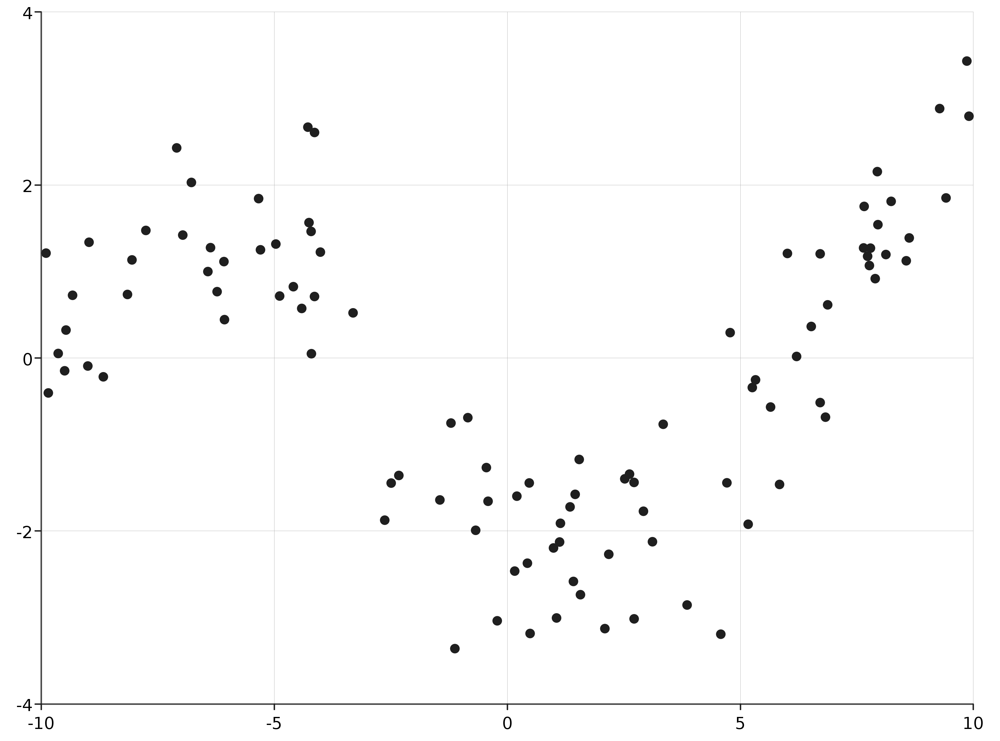

A Gaussian Process can be used to approximate a non-linear function \(y = f(x)\). To get started with the Gaussian Process package, first import the library:
import com.github.jonnylaw.gp._
Finitely many points of a Gaussian process are distributed according to a
multivariate Normal (MVN) distribution. The MVN is parameterised by a mean and
covariance function. A covariance function is
determined by the distance between points and some static parameters. The
distance function can be any suitable function from a pair of locations to a
distance measurement (Location[Double], Location[Double]) => Double. Euclidean
distance is a suitable distance function when dealing with small scale spatial data:
Other suitable distance functions include Manhattan distance or Great Circle distance for measurements on global scale.
In order to simulate data from a Gaussian Process, first specify a vector of locations:
scala> val xs = GaussianProcess.samplePoints(-10.0, 10.0, 100).
| map(One.apply)
xs: scala.collection.immutable.Vector[com.github.jonnylaw.gp.One[Double]] = Vector(One(-9.583500326904693), One(-9.566870717722335), One(-9.274133338397546), One(-9.243697089349956), One(-9.129928039160436), One(-9.028995194673133), One(-8.954307965672598), One(-8.883486600118378), One(-8.742323143129891), One(-8.663682397929824), One(-8.615767281040183), One(-8.365981388155731), One(-8.313065429331532), One(-8.01183355550219), One(-7.657386316062436), One(-7.541115939899492), One(-7.350642591451573), One(-7.12132138802565), One(-7.0878460607323746), One(-6.628356677240239), One(-5.932246317846035), One(-5.924333366305641), One(-5.895614019324769), One(-5.793671047576212), One(-5.677822453868), One(-5.654678858104449), One(-5.294397655987626), One(-4.8449447501...
The function samplePoints uniformly samples a vector of 300 Doubles between -10
and 10. The sampled points are then put into a Location object One. Next a
matrix representing the pairwise distances between each point can be calculated:
scala> val m = GaussianProcess.distanceMatrix(xs, Location.euclidean)
m: breeze.linalg.DenseMatrix[Double] =
0.0 0.016629609182357896 ... (100 total)
0.016629609182357896 0.0 ...
0.30936698850714706 0.29273737932478916 ...
0.3398032375547366 0.32317362837237873 ...
0.4535722877442563 0.4369426785618984 ...
0.5545051322315597 0.5378755230492018 ...
0.6291923612320947 0.6125627520497368 ...
0.7000137267863149 0.683384117603957 ...
0.8411771837748017 0.8245475745924438 ...
0.9198179289748687 0.9031883197925108 ...
0.9677330458645095 0.9511034366821516 ...
1.2175189387489613 1.2008893295666034 ...
1.2704348975731605 1.2538052883908026 ...
1.5716667714025032 1.5550371622201453 ...
1.926114010842257 1.909484401659899 ...
...
Next a covariance function can be selected, for instance the squared exponential covariance function:
\(\sigma\) is known as the length scale, large values of sigma indicate that large
changes in distance are required for the covariance to change significantly.
\(h\) controls the amount of change between two points. In addition some white
noise (Normally distributed with mean zero) representing independent measurement
noise can be added to the covariance function. Then the covariance function can be applied to the distance matrix using a map:
scala> val covFn = (distance: Double) => KernelFunction.squaredExponential(h = 3.0,
| sigma = 5.0)(distance) + KernelFunction.white(sigma = 0.5)(distance)
covFn: Double => Double = $$Lambda$4434/1322536243@2c8cbc2f
scala> val covMat = m.map(covFn)
covMat: breeze.linalg.DenseMatrix[Double] =
3.5 2.999966814915356 ... (100 total)
2.999966814915356 3.5 ...
2.9885370039640553 2.9897341838791713 ...
2.986175999850497 2.9874931994045446 ...
2.975413960962796 2.9771769892819524 ...
2.963328859128796 2.9654828987214836 ...
2.952868195222598 2.9553082604076746 ...
2.9417702322453674 2.9444785381415066 ...
2.9162808603129458 2.91951393135006 ...
2.900170962292827 2.903689945046457 ...
2.889698001016196 2.8933887087137466 ...
2.827288694715994 2.831840578638779 ...
2.812439048100577 2.8171653394441356 ...
2.717756791537747 2.7234151582805444 ...
2.5862674088314...
Then a draw from a zero-mean Gaussian Process prior with covariance matrix
covMat at locations xs can be performed:
import breeze.linalg._
import breeze.stats.distributions._
val nugget = diag(DenseVector.fill(xs.size)(1e-3))
val root = eigSym(covMat + nugget)
val x = DenseVector.rand(covMat.cols, Gaussian(0, 1))
val ys = root.eigenvectors * diag(root.eigenvalues.mapValues(math.sqrt)) * x
Then the data can be plotted and saved:
import com.cibo.evilplot.plot.aesthetics.DefaultTheme._
val sims = GaussianProcess.vecToData(ys, xs)
Plot.scatterPlot(sims).
render().
write(new java.io.File("docs/src/main/resources/figures/simulated_gp.png"))
